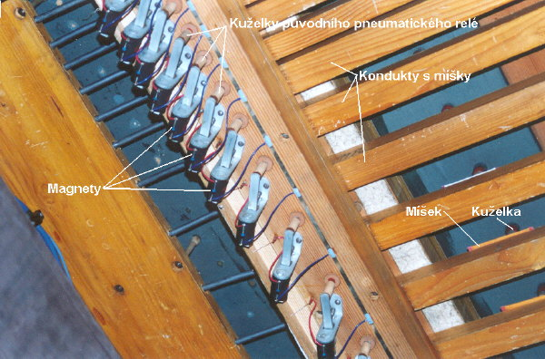

1. elektropneumatická tónová trakturaHrací traktura, nazývaná rovněž tónová nebo manuálová či pedálová je systém (soustava) prvků, převádějících pohyb klávesy stisknuté varhaníkem na pohyb ventilů vpouštějících stlačený vzduch do píšťal, umístěných na vzdušnici. Elektropneumatická hrací traktura je tedy systém elektrických a pneumatických komponentů, které pomocí el. proudu a stlačeného vzduchu přenášejí pohyb klávesy na pohyb tónového ventilu ve vzdušnici. Použité elementy a principy vycházejí z obou typů traktur a jsou popsány zvlášť v příslušných kapitolách o pneumatické traktuře a elektrické traktuře. Při kombinaci obou traktur potřebujeme navíc jen jeden prvek, situovaný v místě jejich styku – převodník impulsů elektrických na pneumatické (či obráceně).
|
Využití elektropneumatické traktury je v některých
případech levnější, než stavba či oprava traktury pneumatické. Zvláště
u velkých a rozlehlých nástrojů se vzdáleným hracím stolem, u kterého
by bylo nutné stavět vícestupňovou pneumatiku se navíc projeví i další
efekt – na rozdíl od pneumatiky je zpoždění u elektrické traktury prakticky
nulové (rychlost šíření elektrického impulsu se blíží rychlosti světla).
Nezanedbatelné je v tomto případě i zjednodušení (nižší počet komponentů)
a tím i nižší poruchovost. Jak vypadá nahrazení složitější pneumatické
traktury elektrickou přibližuje následující animace: |
Všimněme si na animaci záměny typu hracího stolu a úpravy relé ve vzdušnici. Kromě výměny rourek za elektrické vodiče je patrné i vypuštění dvou dodatečných mezirelé, které byly nutné pro korektní přenos pneumatického impulsu na velkou vzdálenost (důvody použití těchto relé jsou uvedeny v kapitole komponenty pneumatické traktury). Při zachování funkce celé traktury dojde k jejímu zjednodušení (elektrické impulsy lze při zachování zásad konstrukce elektrických obvodů přenášet bez podstatných ztrát a zkreslení či nutnosti použití dalších relé na podstatně větší vzdálenosti než pneumatické) a dokonce k částečnému zlepšení jejich vlastností. Od relé ve vzdušnici se už přenos impulsu děje čistě pneumatickou cestou.
|
Funkce této traktury je názorně ukázána na následující
animaci obdobného uspořádání (typ ventilu i vzdušnice jsou shodné, liší
se jen tvar použitého elektromagnetu, jeho funkce je ale tatáž): |
Stisk klávesy způsobí sepnutí s ní svázaných kontaktů a uzavření elektrického
obvodu, napájejícího elektromagnet pod vzdušnicí. Tento elektromagnet
je posledním (akčním) elektrickým členem v této traktuře (uspořádání
traktury je tak velmi jednoduché ve srovnání např. s čistě pneumatickou
trakturou). Tento magnet pohybuje kuželkou ventilu (v tomto bodě začíná
pneumatická část traktury), který řídí tok stlačeného vzduchu do výpustného
(vyprazdňovaného) míšku ve ventilové komoře. Sepnutý elektromagnet nadzvedne
páčkou kuželku ventilu, ten vypustí vzduch z míšku, který díky vnějšímu
přetlaku splaskne. Jeho horní deska je táhlem spojena s tónovým ventilem.
Pohyb této desky dolů otevře tónový ventil a píšťaly na příslušné tónové
kancele mohou znít. I u tohoto řešení traktury se vyskytuje stejný problém, který už byl popsán v kapitole o pneumatické traktuře – pohyb míšků přímo ve ventilové komoře v ní způsobuje mírné kolísání tlaku vzduchu, které by se mohlo projevit změnou výšky tónu už znějících píšťal jiných tónů. Proto se míšky umísťují do odděleného prostoru s vlastním přívodem vzduchu a s ventily jsou spojeny delšími táhly, utěsněnými např. pulpetami: |
Řešení, představené výše je pouze jedním z mnoha
možných příkladů spolupráce tónové vzdušnice s elektropneumatickou trakturou.
Stejně tak i následující animace ukazuje jen jednu z mnoha možností spojení
rejstříkové (kuželkové) vzdušnice s elektropneumatickou trakturou: |
|
Přes různorodost konstrukčních provedení je funkce těchto zařízení shodná – stisk klávesy způsobí uzavření elektrického obvodu, zapracuje elektromagnet relé a přenese impuls do pneumatické části traktury. Otevřený ventil v relé vpustí vzduch do konduktu s míšky. Všechny míšky připevněné ke konduktu se nadmou, nadzvednou kuželky tónových ventilů ve vzdušnici a vpustí vzduch k píšťalám zapnutých rejstříků, které zazní. Přechod systému traktury do klidového stavu probíhá v pořadí – uvolnění klávesy rozepne kontakt a rozpojí elektrický obvod, kotva elektromagnetu odpadne, kuželka ventilu v relé poklesne, vzduch z konduktu a míšku unikne kontraventilem, míšky splasknou a jimi nadzdvižené kuželky se vrátí do spodní polohy, uzavírající přívod vzduchu z kancely do píšťal. Tón přestane znít. |
Na následující fotografii je pohled na vzdušnici
tohoto uspořádání zespodu (varhany v opavské
Konkatedrále): |

U varhan, konstruovaných přímo jako elektropneumatické,
se můžeme setkat s mírně odlišným uspořádáním relé – elektromagnet je
zabudován přímo ve vzduchovém kanálu vzdušnice: |

Funkce je i při odlišném uspořádání elementů shodná
s výše uvedenými příklady – sepnutí elektromagnetu otevře ventil relé
a vpustí vzduch do konduktu s míšky… |
 |
Další možné uspořádání ukazuje
tato ilustrace – spojení elektropneumatické traktury s výpustkovou membránovou
(rejstříkovou) vzdušnicí. Je-li elektromagnet v klidu, vzduch naplňuje
kondukt a s ním spojené membrány (míšky, jejichž horní ploténka tvoří
ventil). Sepnutí elektromagnetu nadzvedne kuželku ventilu, vzduch z konduktu
unikne do okolí (výpustný systém jehož bližší popis najdete v kapitole
o elementech pneumatické traktury).
Membrány poklesnou a píšťaly zapnutých rejstříků (v jejichž kancelách
je vpuštěn rejstříkovým ventilem stlačený vzduch) mohou zaznít. |
2. Pneumaticko - mechanická tónová traktura.Samostatným typem kombinované hrací traktury (a historicky nejstarším) je pneumaticko-mechanická traktura, nazývaná dle svého objevitele Barkerova páka (pneumatický stroj). Její popis naleznete na samostatné stránce zde: |
Na souvisejících stránkách jsou popsány nejčastěji
používané komponenty smíšené
traktury, rejstříková
traktura a Barkerova
páka. |
Poznámka: Tato stránka je součástí Anatomie varhan ®, © Ing. Petr Bernat. Všechny animace © Konrad Zacharski